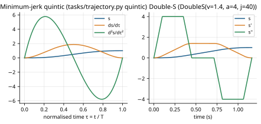

A planner returns a route; a controller needs a schedule. This chapter explains how routes become smooth, limit-respecting functions of time, and why a collision-free path is not automatically a feasible motion.
A path is a geometric curve in configuration space with no notion of time: "go from A through B to C". A trajectory is a path with timing: the configuration as a function of time, $q(t)$, and therefore also velocities $\dot q(t)$ and accelerations $\ddot q(t)$. The planner produces paths (polylines of joint configurations); the task layer turns them into trajectories; the controller tracks the trajectory.
Every move in the project is a straight joint-space line traversed with a scalar timing law $s(t)$ that goes from 0 to 1:
\[ q(t) = q_a + (q_b - q_a)\,s(t), \qquad \dot q(t) = (q_b - q_a)\,\dot s(t), \qquad \ddot q(t) = (q_b - q_a)\,\ddot s(t). \]Only the timing law changes, never the geometry, so the trajectory follows exactly the edge that the collision checker validated. Because the joint-limit box is convex and $s$ goes monotonically from 0 to 1, $q(t)$ stays inside the joint limits if both ends do. Per joint, $|\dot q_j| = |\Delta q_j|\,|\dot s|$, so all seven velocity limits collapse into one scalar limit on $\dot s$: $v_s = \min_j v_{\max,j}/|\Delta q_j|$. The joint with the largest motion relative to its limit is the binding one. The same holds for acceleration ($a_s$) and jerk ($j_s$).
Intuition. A motion that starts and stops abruptly demands infinite acceleration. We want $s$ to start and end at rest with zero acceleration, so the reference is smooth at the joints of consecutive segments. With normalized time $\tau = t/T$ these are six boundary conditions:
\[ s(0) = 0,\; s(1) = 1,\; s'(0) = s'(1) = 0,\; s''(0) = s''(1) = 0. \]The lowest-degree polynomial satisfying six conditions has degree five. Writing $s(\tau) = a_3\tau^3 + a_4\tau^4 + a_5\tau^5$ (the conditions at 0 force $a_0 = a_1 = a_2 = 0$) and imposing the three conditions at $\tau = 1$ gives $a_3 + a_4 + a_5 = 1$, $3a_3 + 4a_4 + 5a_5 = 0$, $6a_3 + 12a_4 + 20a_5 = 0$, whose solution is
\[ s(\tau) = 10\tau^3 - 15\tau^4 + 6\tau^5 . \]This polynomial also minimizes the integral of squared jerk over the move, hence "minimum-jerk". Its peaks are $\max s' = 1.875$ (at $\tau = 0.5$), $\max|s''| = 10/\sqrt3 \approx 5.7735$ and $\max|s'''| = 60$. In real time, with duration $T$:
\[ \max|\dot q_j| = \frac{1.875\,|\Delta q_j|}{T}, \qquad \max|\ddot q_j| = \frac{5.7735\,|\Delta q_j|}{T^2}, \qquad \max|\dddot q_j| = \frac{60\,|\Delta q_j|}{T^3}. \]So the shortest feasible duration for given limits is
\[ T_{\min} = \max\left( \frac{1.875}{v_s},\; \sqrt{\frac{5.7735}{a_s}},\; \sqrt[3]{\frac{60}{j_s}} \right). \] tasks/trajectory.py, constants lines 47–49; plan_segment lines 220–226The quintic is $C^2$ (position, velocity and acceleration are continuous, also across segments, since every segment starts and ends at rest with zero acceleration); its jerk jumps at segment boundaries.
The quintic touches its speed limit only for an instant at mid-move. The double-S (jerk-limited) profile instead has
seven phases of constant jerk ($+j, 0, -j, 0, -j, 0, +j$): it ramps acceleration up, accelerates, ramps down, cruises at
the speed limit, and mirrors that to stop. It is the time-optimal rest-to-rest profile under velocity, acceleration and jerk
limits (Biagiotti & Melchiorri, 2008, §3.4), so at the same limits it is faster than the quintic, at the price of a jerk
that is only piecewise constant. DoubleS (tasks/trajectory.py, line 90) computes the phase
durations for the three cases (speed limit reached; too short to cruise; acceleration limit not reached either) and integrates
the phases exactly (end error ~1e-15, tested).

quintic and DoubleS (figure computed by
make_figures.py; the double-S limits are arbitrary example values).plan_segment(start, goal, requested_time, limits, profile, torque_fn, torque_limits) (line 189) returns the
shortest move that is no shorter than requested and respects the limits:
TrajectoryInfeasible otherwise);limited_by, limiting_joint);TrajectoryInfeasible.task.trajectory in configs/default.yaml, reach.yaml and planning_demo.yaml: profile
min_jerk, velocity 0.9, acceleration 0.5, jerk 0.05 (the datasheet jerk limits of 3,750–10,000 rad/s³ are far above what
smooth tracking needs) and torque 0.8 of the limits. The torque function is ArmInverseDynamics.torque on the
controller's model; the budget is 0.8 × the plant's force range (SimulationRunner.trajectory_options).
Without the section, tasks reproduce the old fixed-duration quintic bit for bit (test_unlimited_task_reproduces_v03_quintic).
fast_feasible requests 1.0 s moves between the demo poses. The generator lengthened them to 1.585 s (joint 7 velocity
limit), 1.341 s (joint 1 velocity) and kept 1.000 s for the last. wrist_feasible: 2.223, 3.193, 2.000 s. With the double-S
profile the 2 s moves stayed at 2 s (cruising at ≤ 0.9 $v_{\max}$). An infeasible budget is reported in words, e.g.
"joint 2 needs 35.2 Nm just to hold against gravity (budget 8.7 Nm): no duration is feasible" for a 10% torque budget.
CartesianReachTask and PlannedJointTask turn each planned path into waypoints: the interior vertices become
via points with zero hold time, and the goal gets the configured hold. Each edge requests segment_time (1.0 s) and
is then time-scaled as above. The result is an ordinary JointTargetTask, whose reference(t) returns
$q_{\text{ref}}(t), \dot q_{\text{ref}}(t), \ddot q_{\text{ref}}(t)$:
reference_preview, at 25 future times every update;Because every via point is a rest-to-rest stop, the trajectory passes exactly through every vertex and stays on the checked
edges; the price is that the arm stops at each via point. If a planned move is just the free direct edge, it keeps the ordinary
move_time, so enabling planning leaves unobstructed tasks identical to the unplanned behaviour
(test_planning_on_free_joint_moves_matches_unplanned_task).
Wall scenario, three seeds: planned motion durations 3.00, 5.00 and 3.00 s; the end effector came within 1 mm of the target
at 2.93, 4.88 and 2.93 s, for both controllers to within 0.01 s. test_planned_reference_is_continuous_feasible_and_collision_free
checks that the demo reference is continuous, within the speed/acceleration/jerk limits, passes through every vertex and keeps at
least 15 mm from the environment at every sample.
Collision checking is purely geometric: it asks whether postures overlap obstacles. Whether the motors can actually produce
the motion depends on speed and posture. A collision-free path executed too fast exceeds speed limits; executed through a
posture where gravity alone needs more torque than the motor has, it is infeasible at any speed. The v0.3 benchmark references
fast and wrist were geometrically harmless but demanded 1.43× the joint-7 speed limit (Chapter 9). The planner
validates geometry; the trajectory generator validates speed, acceleration, jerk and torque. Both are needed, and they are
applied in that order.
With the path collision check deliberately disabled, the torque-feasibility check still rejected a move through the wall
("joint 1 needs 140903 Nm"): MuJoCo's inverse dynamics includes contact forces where the reference penetrates the obstacle.
This is an accident of the implementation and samples only 101 points; it is not a collision check, and the unsafe
comparison mode --unchecked-direct disables it explicitly.